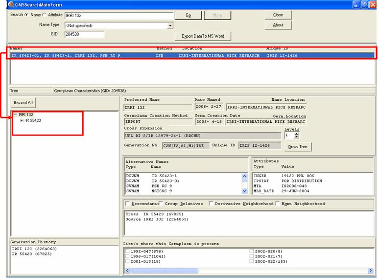
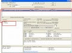

File:Gmssrch tree2.jpg
From ICISWiki

No higher resolution available.
Gmssrch_tree2.jpg (772 × 568 pixels, file size: 71 KB, MIME type: image/jpeg)
No higher resolution available.
Gmssrch_tree2.jpg (772 × 568 pixels, file size: 71 KB, MIME type: image/jpeg)
File history
Click on a date/time to view the file as it appeared at that time.
(Latest | Earliest) View (newer 50) (older 50) (20 | 50 | 100 | 250 | 500)| Date/Time | Thumbnail | Dimensions | User | Comment | |
|---|---|---|---|---|---|
| current | 02:28, 10 July 2007 |  | 772×568 (71 KB) | Lsison (Talk | contribs) |
- Search for duplicate files
- Edit this file using an external application (See the setup instructions for more information)
File links
The following 3 pages link to this file:
Metadata
This file contains additional information, probably added from the digital camera or scanner used to create or digitize it. If the file has been modified from its original state, some details may not fully reflect the modified file.
| Software used | Microsoft Office |
|---|


{kind=link}
{kind=link}